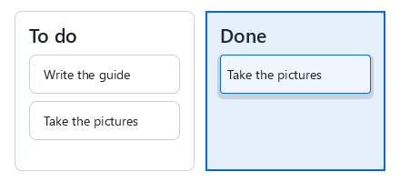
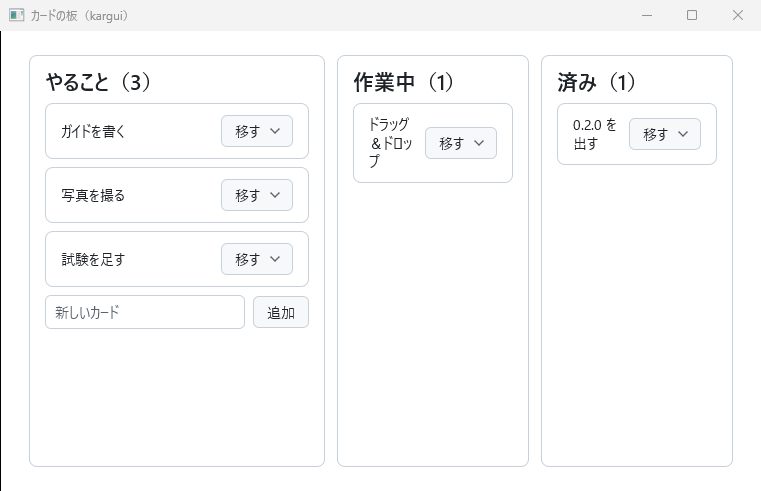

kargui 開発レポート ・ 第 5 章
ドラッグ＆ドロップ
0.2 の後の 1 つ目として、窓の中のドラッグ＆ドロップと、エクスプローラーからファイルを落とす仕組みを足しました。一覧の並べ替え・タブの入れ替え・ドッキングなど、後で作る物の土台になるからです。この章では、書き方の決め方、押してから落とすまでの状態、本物の窓で見つかった不具合を順に書きます。途中で、並べ方の決まり（Size::Fill）も直しました。
この章で分かること
- 荷物の型で「どこに落とせるか」を決める書き方
- クリックと引っ張りを見分ける決まり（Windows と同じ 4 ピクセル）
- 押す・動かす・離すが 1 回にまとめて届いても落とせる作り
- エクスプローラーから落としたファイルが届くまでと、使わないアプリを遅くしない作り
- 本物の窓で見つかった不具合 4 つと、並べ方の決まりの直し
書き方: 型で受け取る物を決める
引っ張り出す部品に .drag_source(荷物) を付け、受け取る部品に .dropped::<型>() を付けます。同じ型の荷物が落とされた時だけ、Some(荷物) が返ります。Dear ImGui と egui の「型付きの荷物」と同じ考え方です。
#[derive(Clone, Copy)]
struct Card(usize);
for (k, name) in todo.iter().enumerate() {
ui.label(name).drag_source(Card(k));
}
let mut done_column = ui.column(|ui| {
ui.heading("済み");
});
if let Some(Card(k)) = done_column.dropped::<Card>() {
done.push(todo.remove(k));
}型で決めるので、カードを「ごみ箱」に落とす、ファイルを「カードの列」に落とす、といった取り違えは起きません。受け取れない所の上では、ポインターが禁止の形になります。

押してから落とすまで
1 回にまとめて届いても落とす
素早く動かすと、押す・動かす・離すの 3 つが、1 フレームの間にまとめて届くことがあります。荷物はアプリの view の中で .drag_source(荷物) が渡す値なので、入力を振り分けている時点では、まだ手元にありません。
そこで、離した時には「どこに落としたか」だけを覚えます。荷物は、そのフレームの view で元の部品の .drag_source が呼ばれた時に受け取ります。受け取る部品の方が先に作られた場合は、その回では受け取らず、同じフレームの次の回（描く回）で渡します。第 1 章の「ビューを何回も呼ぶ」仕組みが、ここで役に立ちました。
荷物を受け取るのは、引っ張り始めた後の 1 回だけです。毎フレーム作り直さないので、荷物の型に Clone を求めずに済みました。ファイルのハンドルのような、写せない値も運べます。
見つかった不具合
| 起きたこと | 原因 | 見つけ方 |
|---|---|---|
| ラベルの上から押すと、引っ張りが始まらない | 窓は「押している部品がある時」だけ、マウスの動きを kargui に渡していた。ラベルは押す対象ではない | 窓の処理を読んで見つけた（試験台は動きを直接送るので、試験では出ない） |
| 「移す」ボタンを押すと、メニューが開かずに引っ張りが始まる | 押した点からの距離（√(2²+4²) ≈ 4.5）を 4 と比べていた。Windows は横と縦を別々に比べる | 作者が本物の窓で試した記録（横 2・縦 4 のずれ） |
| Esc で取り消した後も、ボタンを押したままだと禁止の形が残る | マウスをつかんでいる間は、OS がポインターの形を聞いてこない（WM_SETCURSOR が来ない） | ポインターの形の記録を足す時に、コードを読んで見つけた |
押した点からの距離で比べると、斜めの小さなずれで引っ張りが始まり、クリックが消えます。Windows の SM_CXDRAG・SM_CYDRAG と同じく、横か縦のどちらかが 4 ピクセルを超えた時に始めてください。作者の記録と同じずれ（横 2・縦 4）がクリックになることを、試験で確かめています。
引っ張る操作は、手が思うように動かない人には難しく、キーボードや読み上げソフトではできません。WCAG 2.2 の 2.5.7 も、引っ張らずにできる別のやり方を求めています。見本のカードの板は、どのカードにも「移す」メニュー（ほかの列へ・上へ・下へ）を置いています。
エクスプローラーからファイルを落とす
ほかのアプリからファイルを落とす時も、書き方は同じです。受け取る部品に .dropped::<Vec<PathBuf>>() を付けると、落とされたファイルのパスが届きます。窓の中で Vec<PathBuf> を運ぶ引っ張りも、同じ部品が受け取ります。見本のメモ帳は、メニューバーの下のどこに落としてもファイルを開き、書きかけがあれば先に確認します。
let mut body = ui.column(|ui| {
// 入力欄と、名前・文字数の行
});
if let Some(paths) = body.dropped::<Vec<PathBuf>>() {
// 書きかけを確かめてから開く
}中では、Windows の OLE の仕組みを使っています。ファイルを引っ張っている間、マウスをつかんでいるのはエクスプローラーです。kargui の窓には、OS から「入った・動いた・出た・落とした」の 4 つの知らせが届きます。
使わないアプリを遅くしない
OS に「この窓にはファイルを落とせる」と届け出るには、OLE の準備（OleInitialize）と届け出（RegisterDragDrop）が要ります。パスを読む関数（DragQueryFileW）は、第 3 章で起動を遅くした shell32.dll の中にあります。そこで、Vec<PathBuf> を受け取る部品が初めて現れた時だけ届け出て、shell32.dll はファイルが届いた時に探して呼ぶようにしました。ファイルを受け取らないタスク帳の起動は、直す前と同じ 52.5 ms（往復の順で各 10 回の中央値）でした。
届く順番で、落とせたり落とせなかったりした
作者がメモ帳で試すと、1 回目に落としたファイルが開かず、2 回目は開きました。記録には、落とす直前に「つかみが外れたので取り消す」という行が出ていました。
| 回 | 先に届いた知らせ | 後に届いた知らせ | 結果 |
|---|---|---|---|
| 1 回目 | ボタンの離れたマウスの動き（取り消し） | OS の「落とした」 | 開かない（取り消した後だった） |
| 2 回目 | OS の「落とした」 | ボタンの離れたマウスの動き | 開く |
窓の中の引っ張りのために、「引っ張っている途中なのにボタンが離れていたら、つかみが外れたとみなして取り消す」処理を入れていました。ほかのアプリからの引っ張りで、マウスをつかんでいるのはエクスプローラーです。kargui の窓の上でボタンを離すと、kargui にもボタンの離れたマウスの動きが届きます。この処理が、ほかのアプリからの引っ張りまで取り消していました。
窓のマウスの処理は、窓の中の引っ張りだけを扱うようにし、ほかのアプリからの引っ張りは OS の「落とした」「出た」でだけ終えるようにしました。直した後は、作者が 4 回落として 4 回とも開きました。
自分の窓がマウスをつかんでいる時と、ほかのアプリがつかんでいる時とでは、届く知らせの順番の約束が違います。後者では、自分の窓にはボタンの離れた動きが「落とした」より先に届くことがあります。どちらの引っ張りかを状態に持ち（kargui では external）、それぞれの終わり方を分けてください。
ついでに直した並べ方の決まり
見本のカードの板を撮ると、3 つの列の幅がそろっていませんでした。3 つとも同じ重みの Size::Fill(1.0) なのに、入力欄のある 1 列目だけが広くなっていました。
原因は、Fill の長さを「中身の長さ ＋ 残りの取り分」で決めていたことです。同じ取り分を足しても、中身の長い子は広くなります。WinUI の Grid の * や CSS の flex: 1 は、同じ重みなら中身に関わらず同じ長さにします。kargui もそれに合わせ、「重みどおりに分け、中身より短くはしない」に直しました。
並べ方の試験と同じ数字です。直す前の値は、試験を先に書いて今の作りで走らせた時に出た値です。
直した後の決まりでも、中身が取り分より長い子は中身の長さで止まります。カードの板の 1 列目は入力欄とボタンの中身が取り分より広いので、少し広いままです。2 列目と 3 列目は同じ幅になりました。今ある写真は、この直しで 1 枚も変わりませんでした。Fill が 1 つだけの行（入力欄とボタンなど）は、前と同じ結果になるからです。

examples/board）。カードは引っ張っても、「移す」メニューからも移せる。